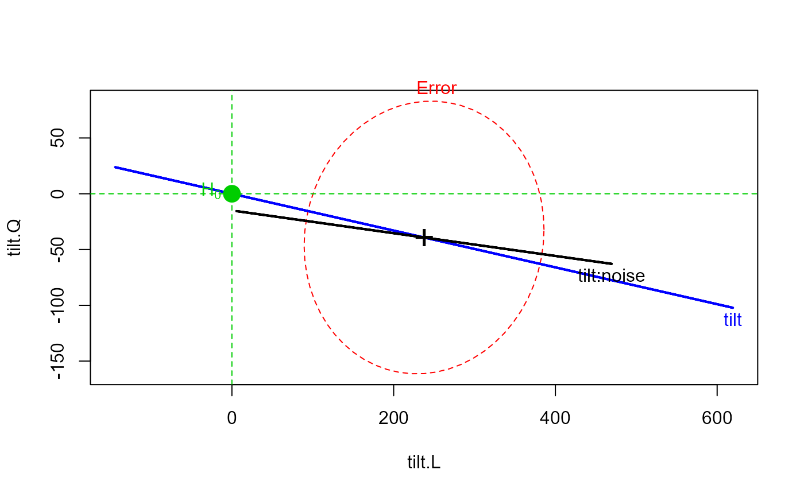

Reaction Time Data
ReactTime.RdData from Maxwell and Delaney (1990, p. 497) representing the reaction times of 10 subjects in some task where visual stimuli are tilted at 0, 4, and 8 degrees; with noise absent or present. Each subject responded to 3 tilt x 2 noise = 6 conditions. The data thus comprise a repeated measure design with two within-S factors.
data(ReactTime)Format
A data frame with 10 observations giving the reaction time for the 6 conditions.
deg0NAa numeric vector
deg4NAa numeric vector
deg8NAa numeric vector
deg0NPa numeric vector
deg4NPa numeric vector
deg8NPa numeric vector
Source
Baron, J. and Li, Y. (2003). Notes on the use of R for psychology experiments and questionnaires, https://cran.r-project.org/doc/contrib/Baron-rpsych.pdf
References
Michael Friendly (2010). HE Plots for Repeated Measures Designs. Journal of Statistical Software, 37(4), 1-40. doi: 10.18637/jss.v037.i04 .
Maxwell, S. E. & Delaney, H. D. (1990). Designing Experiments and Analyzing Data: A model comparison perspective. Pacific Grove, CA: Brooks/Cole.
Examples
data(ReactTime)
(RT.mod <- lm(as.matrix(ReactTime)~1))
#>
#> Call:
#> lm(formula = as.matrix(ReactTime) ~ 1)
#>
#> Coefficients:
#> deg0NA deg4NA deg8NA deg0NP deg4NP deg8NP
#> (Intercept) 462 510 528 492 660 762
#>
# within-S factors
within <- expand.grid(tilt=ordered(c(0,4,8)), noise=c("NA", "NP"))
Anova(RT.mod, idata=within, idesign=~tilt * noise)
#> Note: model has only an intercept; equivalent type-III tests substituted.
#>
#> Type III Repeated Measures MANOVA Tests: Pillai test statistic
#> Df test stat approx F num Df den Df Pr(>F)
#> (Intercept) 1 0.98518 598.45 1 9 1.527e-09 ***
#> tilt 1 0.88760 31.59 2 8 0.0001596 ***
#> noise 1 0.78955 33.77 1 9 0.0002560 ***
#> tilt:noise 1 0.91822 44.91 2 8 4.472e-05 ***
#> ---
#> Signif. codes: 0 '***' 0.001 '**' 0.01 '*' 0.05 '.' 0.1 ' ' 1
heplot(RT.mod, idata=within, idesign=~tilt * noise, iterm="tilt")
#> Note: model has only an intercept; equivalent type-III tests substituted.

# plotting means and std errors directly
levels <- expand.grid(Tilt=c(0,4,8), noise=c("NA", "NP"))
(means.df <- data.frame(levels, mean=colMeans(ReactTime), se=sqrt(diag(var(ReactTime)))/9))
#> Tilt noise mean se
#> deg0NA 0 NA 462 6.324555
#> deg4NA 4 NA 510 9.558139
#> deg8NA 8 NA 528 8.777075
#> deg0NP 0 NP 492 9.838197
#> deg4NP 4 NP 660 12.171612
#> deg8NP 8 NP 762 12.976712
with(means.df, {
plot(Tilt, mean, type="n", main="Reaction Time data", xlab="Tilt", ylab="Reaction time")
colors <- rep(c("red", "blue"), each=3)
pts <- rep(c(15, 16), each=3)
lines(Tilt[1:3], mean[1:3], col="red", lwd=2)
lines(Tilt[4:6], mean[4:6], col="blue", lwd=2)
points(Tilt, mean, pch=pts, col=colors, cex=1.2)
arrows(Tilt, mean-se, Tilt, mean+se, angle=90, code=3,
col=colors, len=.05, lwd=2)
# labels at last point, in lieu of legend
text(Tilt[3], mean[3]-10, labels="NA", col="red", pos=1)
text(Tilt[6], mean[6]-10, labels="NP", col="blue", pos=1)
}
)